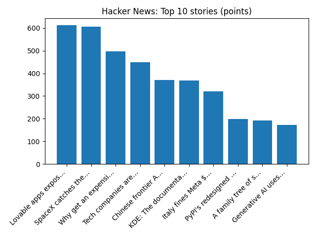

YOUR DAILY INTELLIGENCE BRIEF · 2026-11-15
The world, in focus.
No recent news coverage available.
🌍 Global coverage
🌌 Beyond Earth

Leonid Meteors Through Orion
📜 On this day
- 2025 Anti-government demonstrations are held across Mexico following the assassination of Carlos Manzo earlier that month.
- 2022 The world population reached eight billion.
- 2020 Lewis Hamilton wins the Turkish Grand Prix and secures his seventh drivers' title, equaling the all-time record held by Michael Schumacher.
- 2017 A flood a few miles outside of Athens results in the death of 25 people.
📈 Topic activity
Source health: 24/24 healthy
View original detailed report
Daily Knowledge Garden — 2026-11-15
🧭 Daily Summary
Global coverage includes Judge blocks Trump closure of 'Trash Island' Washington DC golf course on Sunday; Sunday Puzzle: Grand opening; Fans cheer as popular online platform for spinoff stories nears full return after security incident - AP News. Local coverage includes Mary G. Porter Traditional in Woodbridge named top school in Northern Virginia - Prince William Times; Northern Virginia community honoring star who passed too soon - WUSA9.
🌍 Global News (cross-source)
- Judge blocks Trump closure of 'Trash Island' Washington DC golf course on Sunday — BBC — World
- Sunday Puzzle: Grand opening — NPR — Science
- Fans cheer as popular online platform for spinoff stories nears full return after security incident - AP News — AP — Headlines (Google News)
- Tens of thousands of Czechs rally against government media funding plan - Reuters — Reuters — Headlines (Google News)
- Suspected China spy linked to Nvidia's ex-boss left in 2025, Megaspeed says — BBC — World
🏙️ Local News
- Mary G. Porter Traditional in Woodbridge named top school in Northern Virginia - Prince William Times — Google News — Northern Virginia
- Northern Virginia community honoring star who passed too soon - WUSA9 — Google News — Northern Virginia
- Northern Virginia Christmas Market Canceled: Which 10 Fill In? - deeparrival.com — Google News — Northern Virginia
- Bull Run Festival of Lights Opens Tonight for the 2026 Season - Alexandria Living Magazine — Google News — Northern Virginia
- Storm Team4 Forecast: DC area will have a cloudy and cold weekend - NBC4 Washington — Google News — Northern Virginia
🚀 Hacker News (Top 5)
- Lovable apps expose passport details and more than 200K private messages — 612 points, 255 comments
- SpaceX catches the Starship to end Flight 15 — 606 points, 419 comments
- Why get an expensive Pi when I have an old phone? — 497 points, 280 comments
- Tech companies are trying to shift the concept of privacy again — 449 points, 170 comments
- Chinese frontier AI models carry the fingerprint of export-controlled GPUs — 371 points, 161 comments

🌍 Wikipedia — On This Day (selected)
- 2025 — Anti-government demonstrations are held across Mexico following the assassination of Carlos Manzo earlier that month.
- 2022 — The world population reached eight billion.
- 2020 — Lewis Hamilton wins the Turkish Grand Prix and secures his seventh drivers' title, equaling the all-time record held by Michael Schumacher.
- 2017 — A flood a few miles outside of Athens results in the death of 25 people.
- 2017 — Khabarovsk Airlines Flight 463 crashes on approach to Nelkan Airport, killing six people.
🎲 Wikipedia — Random Article
Ministry of Tribal Affairs
The Ministry of Tribal Affairs (MOTA) is an Indian Government ministry charged with overall development of Scheduled Tribe communities of India by providing them education, scholarships, grants to create more health infrastructure in tribal communities, preservation of Tribal Culture & languages and direct cash transfer schemes to economically backward tribal families.
https://en.wikipedia.org/wiki/Ministry_of_Tribal_Affairs
🌌 NASA APOD
Feed Health
- Reuters — Headlines (Google News): ok (15 articles)
- Reuters — World (Google News): ok (15 articles)
- Reuters — Business (Google News): ok (15 articles)
- BBC — World: ok (15 articles)
- BBC — Tech: ok (15 articles)
- BBC — Business: ok (15 articles)
- BBC — Science: ok (15 articles)
- AP — Headlines (Google News): ok (15 articles)
- AP — Politics (Google News): ok (15 articles)
- AP — Business (Google News): ok (15 articles)
- NPR — Top Stories: ok (10 articles)
- NPR — Politics: ok (10 articles)
- NPR — Business: ok (10 articles)
- NPR — Science: ok (10 articles)
- NPR — Technology: ok (10 articles)
- ScienceNews: ok (15 articles)
- ScienceDaily — Top: ok (15 articles)
- Nature — Technology: ok (15 articles)
- Google News — Northern Virginia: ok (15 articles)
- Google News — Northern Virginia traffic: ok (15 articles)
- Google News — Northern Virginia weather: ok (15 articles)
- Wikipedia — On This Day: ok (10 articles)
- Wikipedia — Random: ok (1 articles)
- NASA — APOD: ok (1 articles)
Runs so far today: 2